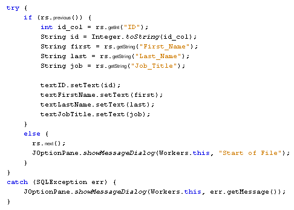

Move Back through a Java Database
Databases and Java Forms: 1 2 3 4 5 6 7 8
The code for the Previous button is similar to the Next button. But instead of using rs.Next, you use rs.Previous.
Return to the Design window and double click your Previous button to create a code stub.
Instead of typing out all that code again, simply copy and paste the code from your Next button. Then change the rs.Next, in the IF statement to rs.Previous. Change the rs.Previous in the ELSE part to rs.Next. You can also change your error message text from "End of File" to "Start of File".
Your code should look like this:

Run your programme again. You should be able to move backward and forward through the database by clicking your two buttons.
<-- Scrolling Buttons | Move to the First and Last Records -->